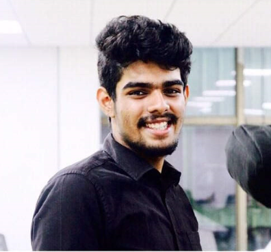

Data Engineer
Scania
Building governed data pipelines and services around high-volume, multimodal sensor data for autonomous-vehicle analytics and downstream AI workflows.
01 ML systems engineer
I design the path from raw data to reliable compute—then make every run reproducible, governed, and explainable.
One connected system
02 Selected experiments
Clean-room, independently runnable experiments about the seams where ML platforms usually break: data, scheduling, identity, and evidence.
DVC reproduces the pipeline. A portable manifest proves every published byte arrived complete and unchanged.
An explainable regional GPU fallback engine that retries capacity failures and stops cold on policy or authentication errors.
A deterministic model for seeing how partitions, initialization, and vectorized batches decide whether a GPU stays busy.
Short-lived, path-scoped access with explicit refresh—and a hard guarantee that ambient credentials never become the fallback.
The work behind the work
The model is only one component. I care about the whole path—from noisy multimodal data to compute, evaluation, and the evidence needed to trust the result.
03 Experience
Scania
Building governed data pipelines and services around high-volume, multimodal sensor data for autonomous-vehicle analytics and downstream AI workflows.
Scania
Turned operational needs into cloud applications and automation—connecting changing demand, suppliers, and production decisions in real time.
Ericsson
Built semantic ticket retrieval with Sentence-BERT and retrieval-augmented generation, then benchmarked and deployed the strongest approach end to end.
Agnikul Cosmos
Worked across trajectory optimization, payload tooling, and real-time Linux architecture for small-launch-vehicle software.

04 About
I’m Adithya, an ML systems and data engineer in Stockholm. My sweet spot is where large-scale data processing, GPU workloads, and platform engineering meet.
I hold an MSc in Autonomous Systems from KTH and a BE in Electronics and Communication Engineering. That path—from embedded systems and perception to cloud-scale ML—still shapes how I build.
05 Toolkit
Python · SQL · PySpark · Spark · Databricks · DVC
PyTorch · TensorFlow · OpenCV · TensorRT · MLflow
AWS · Terraform · Docker · Flyte · SkyPilot · Modal
C · C++ · Shell · Linux · APIs · CI/CD